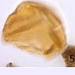
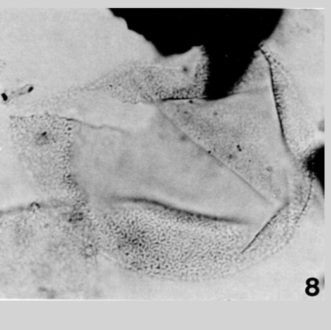
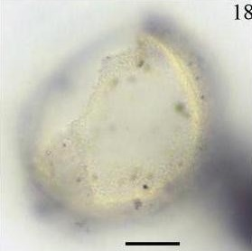

CYSTS LIST
- Alexandrium catenella
- Alexandrium kutnerae
- Alexandrium margalefi
- Alexandrium minutum
- Alexandrium peruvianum
- Alexandrium pseudogoniaulax
- Alexandrium tamarense
- Alexandrium taylori
- Alexandrium spp.
- Archaeperidinium bailongense, cyst of
- Archaeperidinium constrictum, cyst of
- Archaeperidinium minutum, cyst of
- Archaeperidinium monospinum, cyst of
- Archaeperidinium saanichi, cyst of
- Archaeperidinium sp., cyst of
- Ataxiodinium choane
- Ataxiodinium confussum
- Ataxiodinium zevenboomii
- Ataxiodinium sp.
- Biecheleria baltica
- Biecheleria cincta
- Biecheleria sp.
- Bitectatodinium spongium
- Bitectatodinium tepikiense
- Bitectatodinium sp.
- Brigantedinium assymmetricum
- Brigantedinium auranteum
- Brigantedinium cariacoense
- Brigantedinium majusculum
- Brigantedinium simplex
- Brigantedinium sp.
- Caspidinium rugosum
- Cryodinium matsuokai
- Cryodinium sp.
- Cryodinium meridianum
- Dalella chathamensis
- Diplopelta symmetrica, cyst of
- Dubridinium caperatum, cyst of
- Dubridinium cassiculum, cyst of
- Dubridinium cavatum, cyst of
- Dubridinium ulsterum, cyst of
- Dubridinium spp., cyst of
- Echinidinium aculeatum
- Echinidinium bispiniformum
- Echinidinium delicatum
- Echinidinium karaense
- Echinidinium granulatum
- Echinidinium sleipnerensis
- Echinidinium transparantum
- Echinidinium zonneveldiae
- Gymnodinium catenatum, cyst of
- Gymnodinium inusitatum, cyst of
- Gymnodinium microreticulatum, cyst of
- Gymnodinium nolerii, cyst of
- Gymnodinium trapeziforme, cyst of
- Impagidinium aculeatum
- Impagidinium caspienense
- Impagidinium pallidum
- Impagidinium paradoxum
- Impagidinium patulum
- Impagidinium plicatum
- Impagidinium sphaericum
- Impagidinium strialatum
- Impagidinium variaseptum
- Impagidinium velorum
- Islandinium brevispinosum
- Islandinium? cezare
- Islandinium minutum
- Leipokatium invisitatum
- Lejeunecysta acuminate
- Lejeunecysta adeliensis
- Lejeunecysta attenuata
- Lejeunecysta beinenensis
- Lejeunecysta catomus
- Lejeunecysta cinctoria
- Lejeunecysta communis
- Lejeunecysta convexa
- Lejeunecysta cowiei
- Lejeunecysta epidoma
- Lejeunecysta fallax
- Lejeunecysta globosa
- Lejeunecysta granosa
- Lejeunecysta hatterasensis
- Lejeunecysta hyalina
- Lejeunecysta katatonos
- Lejeunecysta lata
- Lejeunecysta longistriatum
- Lejeunecysta marieae
- Lejeunecysta oliva
- Lejeunecysta paratenella
- Lejeunecysta psuchra
- Lejeunecysta pulchra
- Lejeunecysta rotunda
- Lejeunecysta sabrina
- Lejeunecysta striaospinosum
- Lejeunecysta sp.
- Lingulodinium machaerophorum
- Nematosphaeropsis labyrinthus
- Nematosphaeropsis lemniscata
- Nematosphaeropsis rigida
- Nematosphaeropsis scala
- Nematosphaeropsis spp.
- Nia acanthocysta
- Oblea acathocysta, cyst of
- Operculodinium aguinawense
- Operculodinium centrocarpum
- Operculodinium israelianum
- Operculodinium janduchenei
- Operculodinium longispinigerum
- Operculodinium piaseckii
- Operculodinium tegillatum
- Operculodinium microtriainum
- Operculodinium sp.
- Pentapharsodinium dalei
- Peridinium ponticum
- Polykrikos kofoidii, cyst of
- Polykrikos schwartzii, cyst of
- Polykrikos hatmannii, cyst of
- Polykrikos quadratus, cyst of
- Polykrikos sp., cyst of
- Polysphaeridium zoharyi
- Protoperidinium americanum, cyst of
- Protoperidinium conicoides, cyst of
- Protoperidinium fukuyoi, cyst of
- Protoperidinium lewisiae, cyst of
- Protoperidinium monospinum, cyst of
- Protoperidinium parthenopes, cyst of
- Protoperidinium thulensense, cyst of
- Protoperidinium tricingulatum, cyst of
- Pyxidinopsis psilata
- Pyxidinopsis reticulata
- Qia_lebouriae
- Quinquecuspis concreta
- Scrippsiella acuminata
- Scrippsiella crystallina
- Scrippsiella erinaceus
- Scrippsiella spinifera
- Scrippsiella triffida
- Scrippsiella trochoidea
- Selenopemphix antarctica
- Selenopemphix armageddonensis
- Selenopemphix brevispinosum
- Selenopemphix brinkhuisii
- Selenopemphix conspicua
- Selenopemphix coronata
- Selenopemphix crenata
- Selenopemphix dionaeacysta
- Selenopemphix islandensis
- Selenopemphix nephroides
- Selenopemphix quanta
- Selenopemphix tholus
- Selenopemphix undulata
- Selenopemphix sp.
- Spiniferites alaskensis
- Spiniferites asperulus
- Spiniferites belerius
- Spiniferites bentorii
- Spiniferites cruciformis
- Spiniferites delicatus
- Spiniferites elongatus
- Spiniferites frigidus
- Spiniferites hainanensis
- Spiniferites hyperacanthus
- Spiniferites lazus
- Spiniferites ludhamensis
- Spiniferites membranaceus
- Spiniferites mirabilis
- Spiniferites multisphaerus
- Spiniferites pachydermus
- Spiniferites pacificus
- Spiniferites spinatus
- Spiniferites splendidus
- Spiniferites ramosus
- Stelladinium abei
- Stelladinium bifurcatum
- Stelladinium denticulatum
- Stelladinium reidii
- Stelladinium robustum
- Stelladinium stellatum
- Stelladinium spp.
- Tectatodinium pellitum
- Trinovantedinium applanatum
- Trinovantedinium ferugnomatum
- Trinovantedinium glorianum
- Trinovantedinium harpagonium
- Trinovantedinium pallidifulvum
- Trinovantedinium variabile
- Trinovantedinium sp.
- Tuberculodinium vancampoae
- Votadinium bengalensis
- Votadinium calvum
- Votadinium concavum
- Votadinium elongatum
- Votadinium nanhaiense
- Votadinium pontifossatum
- Votadinium psilodora
- Votadinium reidii
- Votadinium rhomboideum
- Votadinium spinosum
- Xandarodinium xanthum
BITECTATODINIUM TEPIKIENSE
Color: *Transparent.
Surface: *Without enlarged filaments. **Smooth and solid inner wall layer from which arises a dense ornament or erect suberect lamellae.
Shape: *Spherical. A small apical protuberance may be present.
Central body: **42 to 56 um. (diameter).
Process length: -
Process: **The lamellae have an aprroximately even height of few micrometers. In plan view, the bases of these lamellae appear long and sinuous, sometimes branching into two, and are interespersed with shorter lamellae and rods. The overall pattern often appears densely vermiculate.
Archeopyle: **Formed by individual loss of precingular plates 3" and 4" and its margin has well defined angles.
Paratabulation: *No tabulation.
Septa: -
Sulcus: -
Distiguishing characteristics: **Archeopyle and surface.
DESCRIPTION:
Proximate spherical species with a smooth and solid inner wall layer from which arises a dense ornament of erect or suberect lamellae. The lamellae have an approximately even height of a few micrometers. In plan view, the bases of these lamellae appear long and sinuous, sometimes branching into two, and are interspersed with shorter lamellae and rods. The overall pattern often appears densely vermiculate. A small apical protuberance may be present. The archeopyle is formed by individual loss of precingular plates 3′′ and 4′′, and its margin has well-defined angles. (Extracted from Nieuwenhove et al., 2020).
LOWEST STRATIGRAPHIC OCCURRENCE:
Occasional occurrences in the Lower (Powell, 1988; Williams et al., 1993) and Middle Miocene of the Porcupine Basin (e.g., Harland, 1979; Louwye et al., 2008). The species becomes more frequent in the Pliocene and the Quaternary (see Londeix, 2018). (Extracted from Nieuwenhove et al., 2020).
IMAGES:
| 1 | 2 | 3 |
| 4 | 5 | 6 |
| 7 | 8 | 9 |
| 10 |  11 11 |
12 |
| 13 | 14 | 15 |
| 16 | 17 | 18 |
| 19 | 20 | 21 |
| 22 | 23 |  24 24 |
| 25 |  26 26 |
27 |
| 28 | 29 | 30 |
| 31 | 32 | 33 |
| 34 | 35 | 36 |
| 37 | 38 | 39 |
 40 40 |
41 | 42 |
IMAGES REFERENCE:
1. Bitectatodinium tepikiense. Wilson 1973. Sample: 1133.28, England finder reference: O45/0. High focue shows erect, suberect or branched luxuria and characteristic wall structure (5). Mid focus, maximum diameter (6). (Al-Saadi, 2014 - Plate 1-5).
2. Bitectatodinium tepikiense. Wilson 1973. Sample: 1133.28, England finder reference: O45/0. High focue shows erect, suberect or branched luxuria and characteristic wall structure (5). Mid focus, maximum diameter (6). (Al-Saadi, 2014 - Plate 1-6).
3. Bitectatodinium tepikiense. Photomicrographs Nº1 of dinoflagellate cysts. Left lateral view, high focus, S28, EF L20/4. (Awad, 2018 - Figure 6-C).
4. Bitectatodinium tepikiense. Photomicrographs of the dominant dinoflagellate cyst taxa from this study (U400), D95-2015-1510 cm. (Eynaud et al., 2004 - Figure 8-D).
5. Bitectatodinium tepikiense. Dinoflagellate cysts. Scale bar: 20 um. (Trujillo, 2009 - Figure 9-12).
6. Bitectatodinium tepikiense. Dinoflagellate cysts identified in Barranca Final Fm. and Puerto Madryn Fm. Scale bar: 10 um. Oblique ventral view, optical section. (Fuentes, 2016 - Figure 6-A).
7. Bitectatodinium tepikiense. Dinoflagellate cysts identified in Barranca Final Fm. and Puerto Madryn Fm. Scale bar: 10 um. Oblique ventral view. Low focus. (Fuentes, 2016 - Figure 6-B).
8. Bitectatodinium tepikiense. Wilson showing variation in luxuria. All bright field photomicrographs. Sample P2 25-2, C26/1. (Head, 1996 - Figure 4-1).
9. Bitectatodinium tepikiense. Wilson showing variation in luxuria. All bright field photomicrographs. Sample P2 25-2, C26/1. Slightly lower focus on camerate apical margin of paraplate 3". (Head, 1996 - Figure 4-2).
10. Bitectatodinium tepikiense. Wilson showing variation in luxuria. All bright field photomicrographs. Sample P2 25-2, C26/1. Mid focus. (Head, 1996 - Figure 4-3).
11. Bitectatodinium tepikiense. Wilson showing variation in luxuria. All bright field photomicrographs. Sample P2 25-2, C26/1. Ventral surface; maximum diameter 62 um. (Head, 1996 - Figure 4-4).
12. Bitectatodinium tepikiense. Wilson showing variation in luxuria. All bright field photomicrographs. Sample 4B 30 76" (2), J27/0. Apical view of apical surface.(Head, 1996 - Figure 4-5).
13. Bitectatodinium tepikiense. Wilson showing variation in luxuria. All bright field photomicrographs. Sample 4B 30 76" (2), J27/0. Lower focus, maximum diameter 64 um.(Head, 1996 - Figure 4-6).
14. Bitectatodinium tepikiense. Wilson showing variation in luxuria. All bright field photomicrographs. Sample 10B 15-1, U12/2. Right lateral view of left-lateral surface. (Head, 1996 - Figure 4-7).
15. Bitectatodinium tepikiense. Wilson showing variation in luxuria. All bright field photomicrographs. Sample 10B 15-1, U12/2. Mid focus. (Head, 1996 - Figure 4-8).
16. Bitectatodinium tepikiense. Wilson showing variation in luxuria. All bright field photomicrographs. Sample 10B 15-1, U12/2. Right lateral surface, maximum diameter 66 um. Note thin luxuria with vermiculate pattern in surface view. (Head, 1996 - Figure 4-9).
17. Bitectatodinium tepikiense. Selected dinoflagellate cysts from the Nordland Group mudstone of Norwegian sector well 15/9-A-11 at 906.00 m depth. Various magnifications; an England Finder reference follows the slide number for each specimen. External view of fragment showing details of wall ornament; height of figure, 36 mm;specimen MPK 12789, slide 1, G21/3. (Head & Riding et al., 2004 - Figure 3-E).
18. Bitectatodinium tepikiense. Paleoenvironmentally significant dinocyst species recorded in the present study. Scale bar: 10 um. Columellate morphotype. Ventral view of ventral surface focused on base of the luxuria. Central body maximu diameter 51 um. Maximum height of luxuria 2.5 um. (Hennisen, 2016 - Plate 1-14).
19. Bitectatodinium tepikiense. Paleoenvironmentally significant dinocyst species recorded in the present study. Scale bar: 10 um. Columellate morphotype. Optical section. Central body maximu diameter 51 um. Maximum height of luxuria 2.5 um. (Hennisen, 2016 - Plate 1-15).
20. Bitectatodinium tepikiense. Paleoenvironmentally significant dinocyst species recorded in the present study. Scale bar: 10 um. Columellate morphotype. Dorsal surface showing 2P archeopyle. Central body maximu diameter 51 um. Maximum height of luxuria 2.5 um. (Hennisen, 2016 - Plate 1-16).
21. Bitectatodinium tepikiense. Paleoenvironmentally significant dinocyst species recorded in the present study. Scale bar: 10 um. Vermiculate morphotype. Optical section showing opercular plate inside cyst. Central body maximum diameter 55 um. DSDP Hole 610A, sample 14-4d (2641 ka). EF P25/1. (Hennisen, 2016 - Plate 1-17).
22. Bitectatodinium tepikiense. Paleoenvironmentally significant dinocyst species recorded in the present study. Scale bar: 10 um. Vermiculate morphotype. Focus on vermiculate wall ornamentation. Central body maximum diameter 55 um. DSDP Hole 610A, sample 14-4d (2641 ka). EF P25/1. (Hennisen, 2016 - Plate 1-18).
23. Bitectatodinium tepikiense. Cyst with open archeopyle. Scale bar: 10 um. (Lewis, 2010 - Figure 1).
24. Bitectatodinium tepikiense. Live cyst with apical protuberance. Scale bar: 10 um. (Lewis, 2010 - Figure 2).
25. Bitectatodinium tepikiense. Cyst showing performed archeopyle. The arrows show the outline of paraplates 3" and 4".Scale bar: 10 um. (Lewis, 2010 - Figure 3).
26. Bitectatodinium tepikiense. Live round cyst. Scale bar: 10 um. (Lewis, 2010 - Figure 4).
27. Bitectatodinium tepikiense. Archeopyle with opercular paraplates still in place. Scale bar: 10 um. (Lewis, 2010 - Figure 5).
28. Bitectatodinium tepikiense. Motile cell showing general cell shape from culture, cell 35 um. across. Scale bar: 10 um. (Lewis, 2010 - Figure 6).
29. Bitectatodinium tepikiense. Dinoflagellate cysts from the Verrebroek Dock (VBD) and Deurganck Dock (DGD) sections. Various magniflcations. Max. dia. = Maximum diameter.External view of torn fragment, showing characteristic vermiculate pattern of luxuria in plan view. Upper focus; width of photo 27 µm; sample VBD 2.6 p1, R39/3. (Louwye et al., 2004 – Figure 8-p).
30. Bitectatodinium tepikiense. Dinoflagellate cysts from the Verrebroek Dock (VBD) and Deurganck Dock (DGD) sections. Various magniflcations. Max. dia. = Maximum diameter.External view of torn fragment, showing characteristic vermiculate pattern of luxuria in plan view. Slightly lower focus. Sample VBD 2.6 p1, R39/3. (Louwye et al., 2004 – Figure 8-q).
31. Bitectatodinium tepikiense. Bright field photomicrographs of selected autotrophic dinoflagellate cyts. UVic 2018-2, sl. 1. Scale bar: 10 um. (Over, 2019 - Plate I-A).
32. Bitectatodinium tepikiense. Bright field photomicrographs of selected autotrophic dinoflagellate cyts. UVic 2018-2, sl. 1. Scale bar: 10 um. (Over, 2019 - Plate I-B).
33. Bitectatodinium tepikiense. Selected dinoflagellate cysts species from ODP Hole 642B. All images were taken in bright field illumination. Scale bar: 10 um., 9H2 34-35, K32/2 (Panitz, 2016 - Plate 5.1-16).
34. Bitectatodinium tepikiense. Selected dinoflagellate cysts species from ODP Hole 642B. All images were taken in bright field illumination. Scale bar: 10 um., 9H2 34-35, K32/2 (Panitz, 2016 - Plate 5.1-17).
35. Bitectatodinium tepikiense. Selected dinoflagellate cysts species from ODP Hole 642B. All images were taken in bright field illumination. Scale bar: 10 um., 9H2 34-35, K32/2 (Panitz, 2016 - Plate 5.1-18).
36. Bitectatodinium tepikiense. Scale bar = 25 µm. All photos are interference contrast. EFC = England Finder coordinates. Sample 162-986D-19R-3, 74–79, 564.44 mbsf, EFC M37/0. (Smelror, 1999 - Plate 1-1).
37. Bitectatodinium tepikiense. High focus showing archeopyle of specimen from the Mediterranean Sea (Core ODP-976). Scale bar: 10 um. (Van Nieuwenhove et al., 2020 - Plate 5-9).
38. Bitectatodinium tepikiense. High to low focus ventral view of specimen from the Iceland Plateau (core DANA12-11/2-GC01). Scale bar: 10 um. (Van Nieuwenhove et al., 2020 - Plate 5-10).
39. Bitectatodinium tepikiense. High to low focus ventral view of specimen from the Iceland Plateau (core DANA12-11/2-GC01). Scale bar: 10 um. (Van Nieuwenhove et al., 2020 - Plate 5-11).
40. Bitectatodinium tepikiense. High to low focus ventral view of specimen from the Iceland Plateau (core DANA12-11/2-GC01). Scale bar: 10 um. (Van Nieuwenhove et al., 2020 - Plate 5-12).
41. Bitectatodinium tepikiense. Photomicrographs of temperature sensitive dinocyst species. Scale bars indicate 20 μm. E.F. = England Finder coordinate. Sample WP26, Serripes Zone, E.F.: O61/3; (Verhoeven & Louwye, 2011 - Plate 3-O).
42. Bitectatodinium tepikiense. Photomicrographs of temperature sensitive dinocyst species. Scale bars indicate 20 μm. E.F. = England Finder coordinate. Sample WP26, Serripes Zone, E.F.: O61/3; (Verhoeven & Louwye, 2011 - Plate 3-P).
BIBLIOGRAPHY:
- Al-Saadi, L. S. J. (2014). Dinoflagellate cyst stratigraphy and palaeoenvironment of the" Utsira Sand" in the northern North Sea (Master's thesis, The University of Bergen).
- Awad, W. K. (2018). Paleogene-Early Neogene palynomorphs from the Eastern Equatorial Atlantic and Southeastern Florida, USA: Biostratigraphy and paleoenvironmental implications.
- Eynaud, F., Turon, J. L., & Duprat, J. (2004). Comparison of the Holocene and Eemian palaeoenvironments in the South Icelandic Basin: dinoflagellate cysts as proxies for the North Atlantic surface circulation. Review of Palaeobotany and Palynology, 128(1-2), 55-79.
- TRUJILLO, J. G. F. (2009). Registro palinológico en sedimentos laminados de la parte sur del Golfo de California y su relación con cambios paleoceanográficos y paleoclimáticos.
- FUENTES, S. N., GULER, M. V., CUITIÑO, J. I., Palazzesi, L., SCASSO, R. A., & BARREDA, V. D. (2017). Bioestratigrafía basada en quistes de dinoflagelados del Neógeno en el noreste de la Patagonia, Argentina. Revista Brasileira de Paleontologia, 19(2), 303-314.
- Head, M. J. (1996). Late Cenozoic dinoflagellates from the Royal Society borehole at Ludham, Norfolk, eastern England. Journal of Paleontology, 543-570.
- Head, M. J., Riding, J. B., Eidvin, T., & Chadwick, R. A. (2004). Palynological and foraminiferal biostratigraphy of (Upper Pliocene) Nordland Group mudstones at Sleipner, northern North Sea. Marine and Petroleum Geology, 21(3), 277-297.
- Hennissen, J. A., Head, M. J., De Schepper, S., & Groeneveld, J. (2017). Dinoflagellate cyst paleoecology during the Pliocene–Pleistocene climatic transition in the North Atlantic. Palaeogeography, Palaeoclimatology, Palaeoecology, 470, 81-108.
- Lewis, J., Rochon, A., Ellegaard, M., Mudie, P., & Harding, I. (2001). The cyst–theca relationship of Bitectatodinium tepikiense (Dinophyceae). European Journal of Phycology, 36(2), 137-146.
- Louwye, S., Head, M. J., & de Schepper, S. (2004). Dinoflagellate cyst stratigraphy and palaeoecology of the Pliocene in northern Belgium, southern North Sea Basin. Geological Magazine, 141(3), 353-378.
- Over, J. S. R. (2019). Last interglacial (MIS 5e) sea surface hydrographic conditions in coastal southern California based on dinoflagellate cysts (Doctoral dissertation).
- Panitz, S. (2016). Pliocene vegetation and climate of Arctic Norway and the variability of the Norwegian Atlantic current (Doctoral dissertation, Northumbria University).
- Smelror, M. (1999). Pliocene–Pleistocene and redeposited dinoflagellate cysts from the western Svalbard Margin (Site 986): biostratigraphy, paleoenvironments and sediment provenance. In Proceedings of the Ocean Drilling Program, scientific results (Vol. 162, pp. 83-97).
- Van Nieuwenhove, N., Head, M. J., Limoges, A., Pospelova, V., Mertens, K. N., Matthiessen, J., ... & Rochon, A. (2020). An overview and brief description of common marine organic-walled dinoflagellate cyst taxa occurring in surface sediments of the Northern Hemisphere. Marine Micropaleontology, 159, 101814.(**)
- Verhoeven, K., & Louwye, S. (2013). Palaeoenvironmental reconstruction and biostratigraphy with marine palynomorphs of the Plio–Pleistocene in Tjörnes, Northern Iceland. Palaeogeography, Palaeoclimatology, Palaeoecology, 376, 224-243.
- Zonneveld, K. A., & Pospelova, V. (2015). A determination key for modern dinoflagellate cysts. Palynology, 39(3), 387-409. (*)